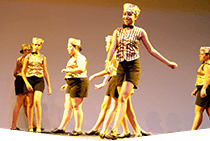
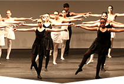

O QUE É?
É uma iniciativa do Sesi-SP que incentiva a prática de diversos tipos de dança: jazz, sapateado,
balé clássico, dança contemporânea, dança de salão e danças urbanas.
O objetivo é promover experiências que envolvam descobertas diárias e desafios por meio do corpo,
formas de se mover, preferências musicais e de coreografias.
As atividades podem ser desenvolvidas a partir de quatro anos até a terceira idade.
NÚMEROS
5.301alunos atendidos*
43unidades do Sesi-SP*
* Até 30/11/2014
ESTILOS PRATICADOS
Jazz
- 
Sapateado
- 
Balé Clássico

Dança Contemporânea
Dança de Salão

Danças Urbanas
* Até 30/11/2014
CIDADES ATENDIDAS
(clique na região)
METODOLOGIA
O Programa Sesi-SP Dança está embasado em dois eixos:
Aprendizado de
Bases técnicas com
Consciência corporal
Criatividade e
Diálogo com o mundo por meio da
Experiência
Desenvolvimento da autonomia criativa, com integração entre os alunos e conhecimento cultural acerca da dança.
ETAPAS
Iniciativa atende alunos a partir de quatro anos, seguindo etapas específicas de acordo com a faixa etária.
(Clique nas etapas)
Propostas de experimentação lúdica e abordagens corporais variadas.
Introdução à linguagem específica da dança com estudos técnicos do movimento e jogos de criação.
Desenvolvimento técnico, ampliação de repertório e autonomia criativa.
Desenvolvimento de habilidades para dançar com conhecimento das mudanças corporais vividas, espaço para um momento diferenciado do cotidiano, com reflexão sobre as criações cênicas.
HISTÓRICO
Até 2008
2009 a 2011
2011 a 2014
2014 a 2015
Contemplado dentro do Programa Atleta do Futuro (PAF), o projeto de dança passa por uma reorientação conceitual, deixando seu vínculo como modalidade esportiva e tornando-se um programa distinto dentro do Sesi-SP.
Período de reorientação conceitual para criação de um programa distinto do PAF.
Construção e implantação de uma metodologia própria, com procedimentos didáticos específicos.
Evolução do programa, com lançamento de cadernos técnicos específicos de diversas modalidades de dança.